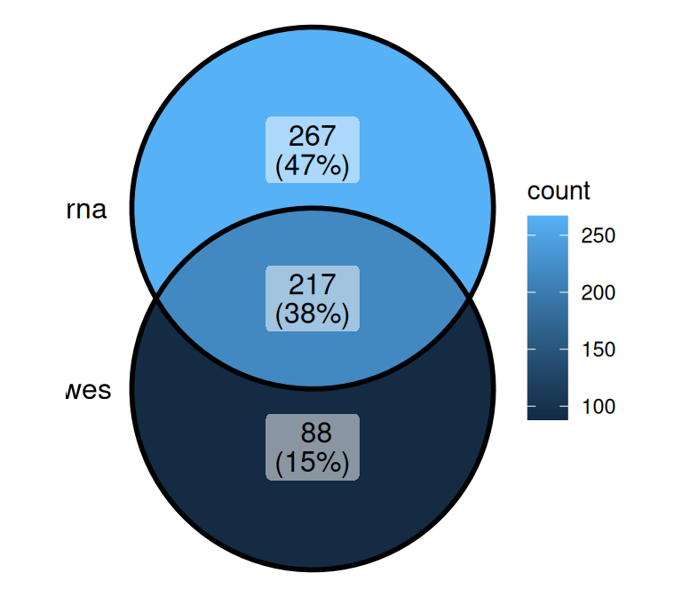
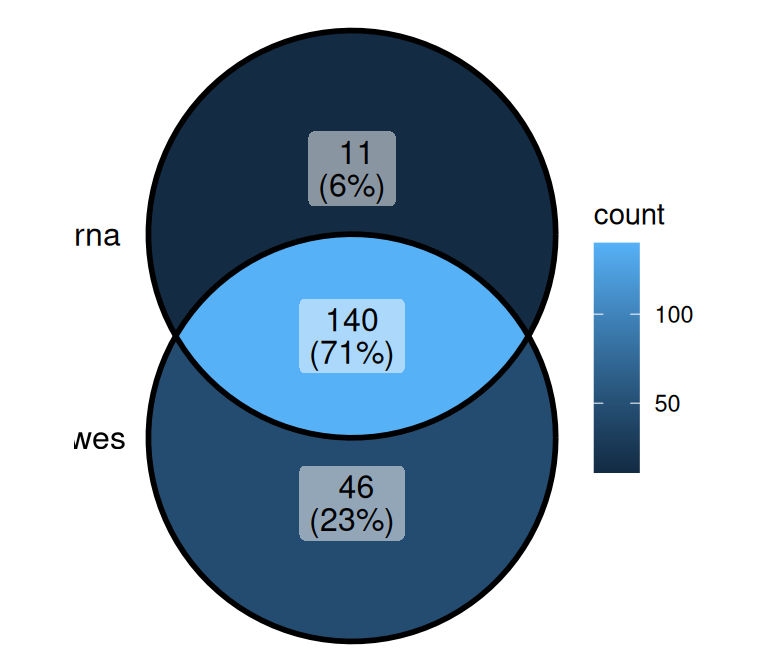
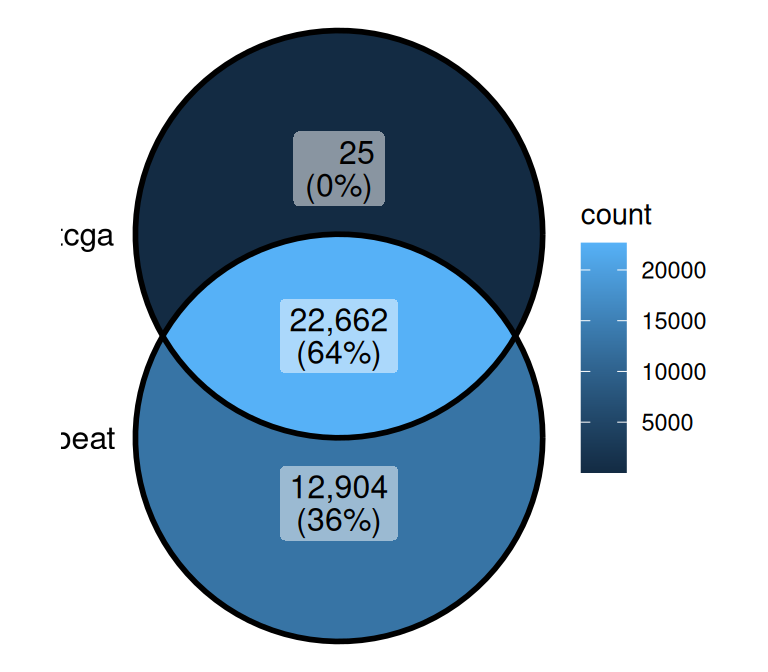

library(tidyverse)
library(knitr)
library(readxl)
library(ggVennDiagram)data_overview
First I read wes to uniform the ID from BEAT and TCGA
wes <- read_xlsx("../raw/WES_filtered_final.xlsx") %>%
mutate(ID = if_else(cohort == "TCGA", str_remove(ID, "-03"), ID))BEAT-AML file mapping is available on https://github.com/biodev/beataml2.0_data.
kable(tribble(
~file, ~data_type, ~cohort, ~content, ~notes,
"210126_BEAT-AML_CPM-TMM_log2_with_hugo.tsv.xz", "transcriptomics", "BEAT-AML", "gene expression", "log2 CPM-TMM; Hugo symbols",
"200221_TCGA-LAML_CPM-TMM.tsv.xz", "transcriptomics", "TCGA-LAML", "gene expression", "linear CPM-TMM; Ensembl IDs plus Hugo column",
"WES_filtered_final.xlsx", "genomics", "BEAT-AML / TCGA / NGS-PTL", "somatic mutations", "long-format mutation table",
"Metabolome.xlsx", "metabolomics", "NGS-PTL", "metabolite abundance", "linear and log-transformed sheets",
"Human-GEM.xlsx", "reference", "all", "genome-scale metabolic model", "genes, reactions, metabolites, subsystems",
"Karyotype and other variables.xlsx", "clinical/cytogenetic", "mixed", "karyotype and variables", "currently appears incomplete",
"beataml_waves1to4_sample_mapping.xlsx", "metadata", "BEAT-AML", "sample ID mapping", "maps expr IDs (BAxxxxR) to WES IDs (labId); source: Bottomly et al. 2022",
"Metodi per integrazione metabolismo-trascrittomica.pdf", "reference", NA, "method paper", "metabolic-transcriptomic integration"
))| file | data_type | cohort | content | notes |
|---|---|---|---|---|
| 210126_BEAT-AML_CPM-TMM_log2_with_hugo.tsv.xz | transcriptomics | BEAT-AML | gene expression | log2 CPM-TMM; Hugo symbols |
| 200221_TCGA-LAML_CPM-TMM.tsv.xz | transcriptomics | TCGA-LAML | gene expression | linear CPM-TMM; Ensembl IDs plus Hugo column |
| WES_filtered_final.xlsx | genomics | BEAT-AML / TCGA / NGS-PTL | somatic mutations | long-format mutation table |
| Metabolome.xlsx | metabolomics | NGS-PTL | metabolite abundance | linear and log-transformed sheets |
| Human-GEM.xlsx | reference | all | genome-scale metabolic model | genes, reactions, metabolites, subsystems |
| Karyotype and other variables.xlsx | clinical/cytogenetic | mixed | karyotype and variables | currently appears incomplete |
| beataml_waves1to4_sample_mapping.xlsx | metadata | BEAT-AML | sample ID mapping | maps expr IDs (BAxxxxR) to WES IDs (labId); source: Bottomly et al. 2022 |
| Metodi per integrazione metabolismo-trascrittomica.pdf | reference | NA | method paper | metabolic-transcriptomic integration |
BEAT
expr_beat <- read_tsv("../raw/210126_BEAT-AML_CPM-TMM_log2_with_hugo.tsv.xz",
show_col_types = FALSE) %>%
column_to_rownames("symbol") %>%
t() %>% as_tibble(rownames = "dbgap_rnaseq_sample")
meta_beat <- read_xlsx("../raw/beataml_waves1to4_sample_mapping.xlsx") %>%
filter(rna_include_in_analysis == "yes")
expr_beat <- expr_beat %>%
left_join(select(meta_beat, dbgap_rnaseq_sample, labId),
by = "dbgap_rnaseq_sample") %>%
relocate(labId, .after = "dbgap_rnaseq_sample") %>%
select(-dbgap_rnaseq_sample)sample_id_wes <- wes %>%
filter(cohort == "BEAT-AML") %>% pull(ID) %>% unique()
ggVennDiagram(x = list(wes = sample_id_wes, rna = expr_beat$labId))
rm(sample_id_wes)expr_beat_wes <- expr_beat %>%
filter(labId %in% intersect(unique(wes$ID), labId))TCGA
expr_tcga <- read_tsv("../raw/200221_TCGA-LAML_CPM-TMM.tsv.xz",
show_col_types = FALSE)expr_tcga %>%
group_by(hugo) %>%
filter(n() > 1) %>%
relocate(hugo) %>%
arrange(hugo)# A tibble: 8,208 × 153
# Groups: hugo [3]
hugo ensembl_gene_id `TCGA-AB-2876` `TCGA-AB-2952` `TCGA-AB-2915`
<chr> <chr> <dbl> <dbl> <dbl>
1 GOLGA8M ENSG00000188626 0.291 0.0685 0.116
2 GOLGA8M ENSG00000261480 0 0 0
3 POLR2J4 ENSG00000214783 6.65 6.06 6.37
4 POLR2J4 ENSG00000272655 4.23 3.73 4.81
5 <NA> ENSG00000036549 110. 69.6 71.5
6 <NA> ENSG00000069712 6.03 4.93 5.74
7 <NA> ENSG00000093100 0.204 0.445 0.463
8 <NA> ENSG00000108958 0.612 0.342 0.521
9 <NA> ENSG00000111788 6.62 24.8 12.3
10 <NA> ENSG00000116883 10.3 21.7 8.52
# ℹ 8,198 more rows
# ℹ 148 more variables: `TCGA-AB-2929` <dbl>, `TCGA-AB-2938` <dbl>,
# `TCGA-AB-2849` <dbl>, `TCGA-AB-2877` <dbl>, `TCGA-AB-2986` <dbl>,
# `TCGA-AB-2971` <dbl>, `TCGA-AB-2955` <dbl>, `TCGA-AB-3007` <dbl>,
# `TCGA-AB-2896` <dbl>, `TCGA-AB-2821` <dbl>, `TCGA-AB-2841` <dbl>,
# `TCGA-AB-2899` <dbl>, `TCGA-AB-3001` <dbl>, `TCGA-AB-2924` <dbl>,
# `TCGA-AB-2941` <dbl>, `TCGA-AB-2892` <dbl>, `TCGA-AB-2812` <dbl>, …expr_tcga <- expr_tcga %>%
filter(!is.na(hugo)) %>%
group_by(hugo) %>%
filter(n() == 1) %>%
ungroup()
taxa_tcga <- expr_tcga %>%
select(hugo, ensembl_gene_id)
expr_tcga <- expr_tcga %>%
select(-ensembl_gene_id) %>%
column_to_rownames("hugo") %>%
t() %>%
as_tibble(rownames = "sample_id")sample_id_wes <- wes %>%
filter(cohort == "TCGA") %>% pull(ID) %>% unique()
ggVennDiagram(x = list(wes = sample_id_wes, rna = expr_tcga$sample_id))
rm(sample_id_wes)expr_tcga_wes <- expr_tcga %>%
filter(sample_id %in% intersect(unique(wes$ID), sample_id))Comparison between BEAT and TCGA
ggVennDiagram(x = list(beat = colnames(expr_beat)[-1], tcga = colnames(expr_tcga)[-1]))
inter <- intersect(colnames(expr_beat_wes)[-1], colnames(expr_tcga_wes)[-1])
only_beat <- setdiff(colnames(expr_beat_wes)[-1], colnames(expr_tcga_wes)[-1])
sum(expr_beat_wes[, inter]) / sum(expr_beat_wes[, -1])[1] 0.99236sum(expr_tcga_wes[, inter]) / sum(expr_tcga_wes[, -1])[1] 0.9997504sum(expr_beat_wes[, only_beat])[1] 104659.9expr_only_beat <- expr_beat_wes[, only_beat]
sum(expr_only_beat == 0) / length(as.matrix(expr_only_beat))[1] 0.7752063sum(expr_beat_wes[, inter])[1] 13594214rm(inter, only_beat)